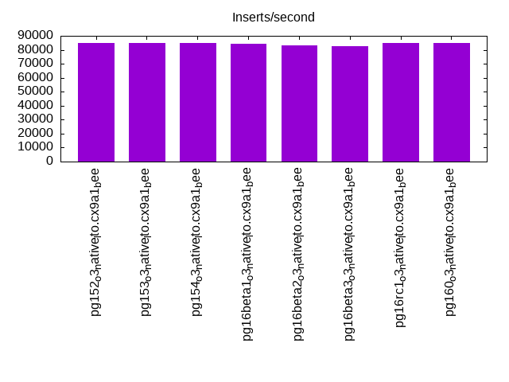
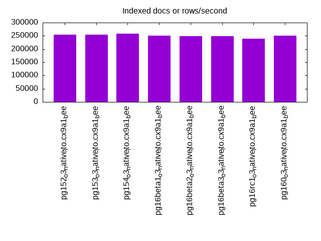
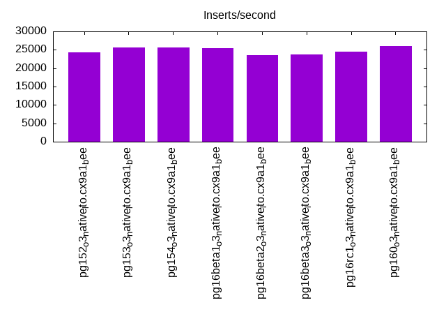
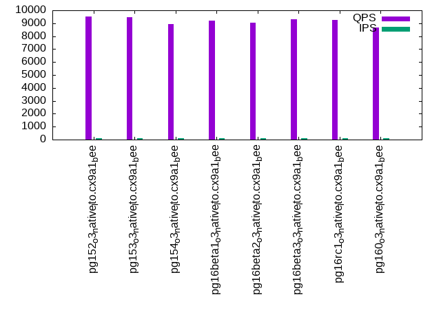
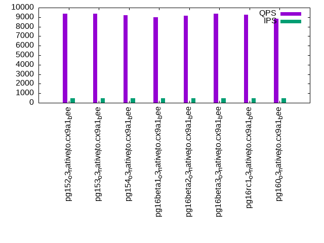
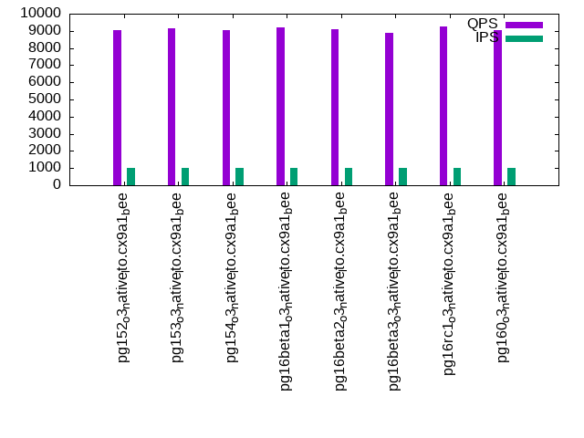

This is a report for the insert benchmark with 20M docs and 1 client(s). It is generated by scripts (bash, awk, sed) and Tufte might not be impressed. An overview of the insert benchmark is here and a short update is here. Below, by DBMS, I mean DBMS+version.config. An example is my8020.c10b40 where my means MySQL, 8020 is version 8.0.20 and c10b40 is the name for the configuration file.
The test server has 8 AMD cores, 16G RAM and an NVMe SSD. It is described here as the Beelink. The benchmark was run with 1 client and there were 1 or 3 connections per client (1 for queries or inserts without rate limits, 1+1 for rate limited inserts+deletes). It uses 1 table. It loads 20M rows per table without secondary indexes, creates secondary indexes, then inserts 300M rows per table with a delete per insert to avoid growing the table. It then does 3 read+write tests for 7200s each that do queries as fast as possible with 100, 500 and then 1000 inserts/second/client concurrent with the queries and 1000 deletes/second to avoid growing the table. The database is cached by Postgres. Clients and the DBMS share one server. The per-database configs are in the per-database subdirectories here.
The tested DBMS are:
The numbers are inserts/s for l.i0 and l.i1, indexed docs (or rows) /s for l.x and queries/s for q*.2. The values are the average rate over the entire test for inserts (IPS) and queries (QPS). The range of values for IPS and QPS is split into 3 parts: bottom 25%, middle 50%, top 25%. Values in the bottom 25% have a red background, values in the top 25% have a green background and values in the middle have no color. A gray background is used for values that can be ignored because the DBMS did not sustain the target insert rate. Red backgrounds are not used when the minimum value is within 80% of the max value.
| dbms | l.i0 | l.x | l.i1 | q100.1 | q500.1 | q1000.1 |
|---|---|---|---|---|---|---|
| pg152_o3_native_lto.cx9a1_bee | 85106 | 254430 | 24351 | 9508 | 9385 | 9027 |
| pg153_o3_native_lto.cx9a1_bee | 84746 | 254430 | 25612 | 9453 | 9375 | 9137 |
| pg154_o3_native_lto.cx9a1_bee | 85106 | 257692 | 25621 | 8914 | 9216 | 9017 |
| pg16beta1_o3_native_lto.cx9a1_bee | 84388 | 251250 | 25517 | 9213 | 8973 | 9194 |
| pg16beta2_o3_native_lto.cx9a1_bee | 83333 | 248148 | 23520 | 9016 | 9146 | 9075 |
| pg16beta3_o3_native_lto.cx9a1_bee | 82645 | 248148 | 23672 | 9288 | 9347 | 8879 |
| pg16rc1_o3_native_lto.cx9a1_bee | 84746 | 239286 | 24466 | 9260 | 9239 | 9242 |
| pg160_o3_native_lto.cx9a1_bee | 84746 | 251250 | 25931 | 8694 | 8844 | 9026 |
This table has relative throughput, throughput for the DBMS relative to the DBMS in the first line, using the absolute throughput from the previous table. Values less than 0.95 have a yellow background. Values greater than 1.05 have a blue background.
| dbms | l.i0 | l.x | l.i1 | q100.1 | q500.1 | q1000.1 |
|---|---|---|---|---|---|---|
| pg152_o3_native_lto.cx9a1_bee | 1.00 | 1.00 | 1.00 | 1.00 | 1.00 | 1.00 |
| pg153_o3_native_lto.cx9a1_bee | 1.00 | 1.00 | 1.05 | 0.99 | 1.00 | 1.01 |
| pg154_o3_native_lto.cx9a1_bee | 1.00 | 1.01 | 1.05 | 0.94 | 0.98 | 1.00 |
| pg16beta1_o3_native_lto.cx9a1_bee | 0.99 | 0.99 | 1.05 | 0.97 | 0.96 | 1.02 |
| pg16beta2_o3_native_lto.cx9a1_bee | 0.98 | 0.98 | 0.97 | 0.95 | 0.97 | 1.01 |
| pg16beta3_o3_native_lto.cx9a1_bee | 0.97 | 0.98 | 0.97 | 0.98 | 1.00 | 0.98 |
| pg16rc1_o3_native_lto.cx9a1_bee | 1.00 | 0.94 | 1.00 | 0.97 | 0.98 | 1.02 |
| pg160_o3_native_lto.cx9a1_bee | 1.00 | 0.99 | 1.06 | 0.91 | 0.94 | 1.00 |
This lists the average rate of inserts/s for the tests that do inserts concurrent with queries. For such tests the query rate is listed in the table above. The read+write tests are setup so that the insert rate should match the target rate every second. Cells that are not at least 95% of the target have a red background to indicate a failure to satisfy the target.
| dbms | q100.1 | q500.1 | q1000.1 |
|---|---|---|---|
| pg152_o3_native_lto.cx9a1_bee | 100 | 499 | 998 |
| pg153_o3_native_lto.cx9a1_bee | 100 | 499 | 998 |
| pg154_o3_native_lto.cx9a1_bee | 100 | 499 | 997 |
| pg16beta1_o3_native_lto.cx9a1_bee | 100 | 499 | 997 |
| pg16beta2_o3_native_lto.cx9a1_bee | 100 | 499 | 998 |
| pg16beta3_o3_native_lto.cx9a1_bee | 100 | 499 | 998 |
| pg16rc1_o3_native_lto.cx9a1_bee | 100 | 499 | 998 |
| pg160_o3_native_lto.cx9a1_bee | 100 | 499 | 998 |
| target | 100 | 500 | 1000 |
l.i0: load without secondary indexes. Graphs for performance per 1-second interval are here.
Average throughput:
Insert response time histogram: each cell has the percentage of responses that take <= the time in the header and max is the max response time in seconds. For the max column values in the top 25% of the range have a red background and in the bottom 25% of the range have a green background. The red background is not used when the min value is within 80% of the max value.
| dbms | 256us | 1ms | 4ms | 16ms | 64ms | 256ms | 1s | 4s | 16s | gt | max |
|---|---|---|---|---|---|---|---|---|---|---|---|
| pg152_o3_native_lto.cx9a1_bee | 0.006 | 99.993 | 0.003 | ||||||||
| pg153_o3_native_lto.cx9a1_bee | 0.002 | 99.999 | 0.003 | ||||||||
| pg154_o3_native_lto.cx9a1_bee | 0.017 | 99.982 | 0.001 | 0.005 | |||||||
| pg16beta1_o3_native_lto.cx9a1_bee | 0.004 | 99.996 | 0.001 | 0.006 | |||||||
| pg16beta2_o3_native_lto.cx9a1_bee | 99.999 | 0.001 | 0.009 | ||||||||
| pg16beta3_o3_native_lto.cx9a1_bee | 99.999 | 0.001 | 0.010 | ||||||||
| pg16rc1_o3_native_lto.cx9a1_bee | 0.006 | 99.994 | 0.001 | 0.006 | |||||||
| pg160_o3_native_lto.cx9a1_bee | 0.003 | 99.996 | 0.003 |
Performance metrics for the DBMS listed above. Some are normalized by throughput, others are not. Legend for results is here.
ips qps rps rmbps wps wmbps rpq rkbpq wpi wkbpi csps cpups cspq cpupq dbgb1 dbgb2 rss maxop p50 p99 tag 85106 0 0 0.0 98.0 36.2 0.000 0.000 0.001 0.435 10243 22.7 0.120 21 1.9 5.2 0.2 0.003 85409 81900 20m.pg152_o3_native_lto.cx9a1_bee 84746 0 0 0.0 98.6 36.0 0.000 0.000 0.001 0.435 10214 23.0 0.121 22 1.9 5.2 0.3 0.003 85007 81182 20m.pg153_o3_native_lto.cx9a1_bee 85106 0 0 0.0 99.6 36.1 0.000 0.000 0.001 0.434 10262 22.4 0.121 21 1.9 5.2 2.0 0.005 85307 82206 20m.pg154_o3_native_lto.cx9a1_bee 84388 0 0 0.0 100.1 36.1 0.000 0.000 0.001 0.438 10260 22.5 0.122 21 1.9 5.2 2.0 0.006 85152 73991 20m.pg16beta1_o3_native_lto.cx9a1_bee 83333 0 0 0.0 98.2 35.3 0.000 0.000 0.001 0.433 10115 23.3 0.121 22 1.9 5.2 0.2 0.009 83509 80001 20m.pg16beta2_o3_native_lto.cx9a1_bee 82645 0 0 0.0 97.7 35.1 0.000 0.000 0.001 0.434 10049 23.0 0.122 22 1.9 5.2 1.9 0.010 83007 80108 20m.pg16beta3_o3_native_lto.cx9a1_bee 84746 0 0 0.0 97.5 36.0 0.000 0.000 0.001 0.435 10221 22.4 0.121 21 1.9 5.2 0.2 0.006 84977 81272 20m.pg16rc1_o3_native_lto.cx9a1_bee 84746 0 0 0.0 97.6 36.0 0.000 0.000 0.001 0.435 10245 22.3 0.121 21 1.9 5.2 0.3 0.003 85207 82305 20m.pg160_o3_native_lto.cx9a1_bee
l.x: create secondary indexes.
Average throughput:
Performance metrics for the DBMS listed above. Some are normalized by throughput, others are not. Legend for results is here.
ips qps rps rmbps wps wmbps rpq rkbpq wpi wkbpi csps cpups cspq cpupq dbgb1 dbgb2 rss maxop p50 p99 tag 254430 0 0 0.0 78.2 36.6 0.000 0.000 0.000 0.147 722 12.2 0.003 4 3.7 8.0 2.1 0.003 NA NA 20m.pg152_o3_native_lto.cx9a1_bee 254430 0 0 0.0 80.0 37.2 0.000 0.000 0.000 0.150 688 12.1 0.003 4 3.7 8.0 2.1 0.003 NA NA 20m.pg153_o3_native_lto.cx9a1_bee 257692 0 0 0.0 81.0 37.7 0.000 0.000 0.000 0.150 836 12.1 0.003 4 3.7 8.0 2.1 0.003 NA NA 20m.pg154_o3_native_lto.cx9a1_bee 251250 0 0 0.0 125.4 58.5 0.000 0.000 0.000 0.238 780 12.2 0.003 4 3.7 8.0 2.1 0.003 NA NA 20m.pg16beta1_o3_native_lto.cx9a1_bee 248148 0 0 0.0 90.7 41.9 0.000 0.000 0.000 0.173 670 12.3 0.003 4 3.7 8.0 2.1 0.003 NA NA 20m.pg16beta2_o3_native_lto.cx9a1_bee 248148 0 0 0.0 91.7 42.2 0.000 0.000 0.000 0.174 680 12.3 0.003 4 3.7 8.0 2.1 0.003 NA NA 20m.pg16beta3_o3_native_lto.cx9a1_bee 239286 0 0 0.0 75.7 35.3 0.000 0.000 0.000 0.151 790 12.2 0.003 4 3.7 8.0 2.1 0.003 NA NA 20m.pg16rc1_o3_native_lto.cx9a1_bee 251250 0 0 0.0 119.7 56.9 0.000 0.000 0.000 0.232 797 12.2 0.003 4 3.7 8.0 2.1 0.003 NA NA 20m.pg160_o3_native_lto.cx9a1_bee
l.i1: continue load after secondary indexes created. Graphs for performance per 1-second interval are here.
Average throughput:
Insert response time histogram: each cell has the percentage of responses that take <= the time in the header and max is the max response time in seconds. For the max column values in the top 25% of the range have a red background and in the bottom 25% of the range have a green background. The red background is not used when the min value is within 80% of the max value.
| dbms | 256us | 1ms | 4ms | 16ms | 64ms | 256ms | 1s | 4s | 16s | gt | max |
|---|---|---|---|---|---|---|---|---|---|---|---|
| pg152_o3_native_lto.cx9a1_bee | 99.991 | 0.009 | nonzero | 0.024 | |||||||
| pg153_o3_native_lto.cx9a1_bee | 99.996 | 0.004 | nonzero | 0.050 | |||||||
| pg154_o3_native_lto.cx9a1_bee | 99.996 | 0.004 | nonzero | 0.028 | |||||||
| pg16beta1_o3_native_lto.cx9a1_bee | 99.996 | 0.004 | nonzero | 0.022 | |||||||
| pg16beta2_o3_native_lto.cx9a1_bee | 99.994 | 0.006 | nonzero | 0.021 | |||||||
| pg16beta3_o3_native_lto.cx9a1_bee | 99.996 | 0.004 | nonzero | 0.020 | |||||||
| pg16rc1_o3_native_lto.cx9a1_bee | 99.985 | 0.015 | nonzero | 0.054 | |||||||
| pg160_o3_native_lto.cx9a1_bee | 99.996 | 0.004 | nonzero | 0.059 |
Delete response time histogram: each cell has the percentage of responses that take <= the time in the header and max is the max response time in seconds. For the max column values in the top 25% of the range have a red background and in the bottom 25% of the range have a green background. The red background is not used when the min value is within 80% of the max value.
| dbms | 256us | 1ms | 4ms | 16ms | 64ms | 256ms | 1s | 4s | 16s | gt | max |
|---|---|---|---|---|---|---|---|---|---|---|---|
| pg152_o3_native_lto.cx9a1_bee | 0.545 | 83.724 | 2.462 | 13.270 | nonzero | 0.022 | |||||
| pg153_o3_native_lto.cx9a1_bee | 0.548 | 83.507 | 8.790 | 7.155 | nonzero | 0.049 | |||||
| pg154_o3_native_lto.cx9a1_bee | 0.466 | 83.473 | 9.143 | 6.917 | nonzero | 0.035 | |||||
| pg16beta1_o3_native_lto.cx9a1_bee | 0.576 | 83.321 | 8.196 | 7.906 | nonzero | 0.020 | |||||
| pg16beta2_o3_native_lto.cx9a1_bee | 0.511 | 83.613 | 2.079 | 13.798 | nonzero | 0.020 | |||||
| pg16beta3_o3_native_lto.cx9a1_bee | 0.495 | 83.794 | 1.970 | 13.741 | nonzero | 0.018 | |||||
| pg16rc1_o3_native_lto.cx9a1_bee | 0.510 | 83.856 | 3.618 | 12.016 | nonzero | 0.019 | |||||
| pg160_o3_native_lto.cx9a1_bee | 0.456 | 83.703 | 9.207 | 6.634 | nonzero | 0.023 |
Performance metrics for the DBMS listed above. Some are normalized by throughput, others are not. Legend for results is here.
ips qps rps rmbps wps wmbps rpq rkbpq wpi wkbpi csps cpups cspq cpupq dbgb1 dbgb2 rss maxop p50 p99 tag 24351 0 0 0.0 67.0 18.4 0.000 0.000 0.003 0.776 11609 23.3 0.477 77 5.1 45.2 0.0 0.024 32063 8491 20m.pg152_o3_native_lto.cx9a1_bee 25612 0 0 0.0 71.1 19.4 0.000 0.000 0.003 0.776 12232 23.9 0.478 75 5.1 45.2 0.3 0.050 32364 6443 20m.pg153_o3_native_lto.cx9a1_bee 25621 0 0 0.0 71.0 19.4 0.000 0.000 0.003 0.775 12241 23.8 0.478 74 5.1 45.1 5.1 0.028 32564 5644 20m.pg154_o3_native_lto.cx9a1_bee 25517 0 0 0.0 70.7 19.4 0.000 0.000 0.003 0.777 12219 23.9 0.479 75 5.1 45.2 3.8 0.022 32378 6793 20m.pg16beta1_o3_native_lto.cx9a1_bee 23520 0 0 0.0 66.0 17.9 0.000 0.000 0.003 0.779 11258 22.9 0.479 78 5.1 45.2 2.4 0.021 32026 5647 20m.pg16beta2_o3_native_lto.cx9a1_bee 23672 0 0 0.0 66.1 18.0 0.000 0.000 0.003 0.778 11363 23.0 0.480 78 5.1 45.2 4.7 0.020 31966 5744 20m.pg16beta3_o3_native_lto.cx9a1_bee 24466 0 0 0.0 67.1 18.5 0.000 0.000 0.003 0.774 11704 23.2 0.478 76 5.1 45.1 5.1 0.054 32176 4645 20m.pg16rc1_o3_native_lto.cx9a1_bee 25931 0 0 0.0 71.6 19.6 0.000 0.000 0.003 0.775 12398 23.9 0.478 74 5.1 45.1 3.0 0.059 32463 5646 20m.pg160_o3_native_lto.cx9a1_bee
q100.1: range queries with 100 insert/s per client. Graphs for performance per 1-second interval are here.
Average throughput:
Query response time histogram: each cell has the percentage of responses that take <= the time in the header and max is the max response time in seconds. For max values in the top 25% of the range have a red background and in the bottom 25% of the range have a green background. The red background is not used when the min value is within 80% of the max value.
| dbms | 256us | 1ms | 4ms | 16ms | 64ms | 256ms | 1s | 4s | 16s | gt | max |
|---|---|---|---|---|---|---|---|---|---|---|---|
| pg152_o3_native_lto.cx9a1_bee | 99.966 | 0.034 | nonzero | 0.004 | |||||||
| pg153_o3_native_lto.cx9a1_bee | 99.970 | 0.030 | nonzero | nonzero | 0.005 | ||||||
| pg154_o3_native_lto.cx9a1_bee | 99.956 | 0.043 | nonzero | nonzero | 0.004 | ||||||
| pg16beta1_o3_native_lto.cx9a1_bee | 99.972 | 0.028 | nonzero | nonzero | 0.005 | ||||||
| pg16beta2_o3_native_lto.cx9a1_bee | 99.951 | 0.048 | nonzero | nonzero | 0.006 | ||||||
| pg16beta3_o3_native_lto.cx9a1_bee | 99.963 | 0.037 | nonzero | nonzero | 0.004 | ||||||
| pg16rc1_o3_native_lto.cx9a1_bee | 99.962 | 0.038 | nonzero | nonzero | 0.005 | ||||||
| pg160_o3_native_lto.cx9a1_bee | 99.966 | 0.034 | nonzero | 0.004 |
Insert response time histogram: each cell has the percentage of responses that take <= the time in the header and max is the max response time in seconds. For max values in the top 25% of the range have a red background and in the bottom 25% of the range have a green background. The red background is not used when the min value is within 80% of the max value.
| dbms | 256us | 1ms | 4ms | 16ms | 64ms | 256ms | 1s | 4s | 16s | gt | max |
|---|---|---|---|---|---|---|---|---|---|---|---|
| pg152_o3_native_lto.cx9a1_bee | 73.528 | 26.472 | 0.006 | ||||||||
| pg153_o3_native_lto.cx9a1_bee | 73.299 | 26.701 | 0.007 | ||||||||
| pg154_o3_native_lto.cx9a1_bee | 73.479 | 26.521 | 0.010 | ||||||||
| pg16beta1_o3_native_lto.cx9a1_bee | 72.667 | 27.333 | 0.008 | ||||||||
| pg16beta2_o3_native_lto.cx9a1_bee | 75.368 | 24.632 | 0.006 | ||||||||
| pg16beta3_o3_native_lto.cx9a1_bee | 73.049 | 26.951 | 0.007 | ||||||||
| pg16rc1_o3_native_lto.cx9a1_bee | 74.333 | 25.667 | 0.006 | ||||||||
| pg160_o3_native_lto.cx9a1_bee | 73.868 | 26.132 | 0.006 |
Delete response time histogram: each cell has the percentage of responses that take <= the time in the header and max is the max response time in seconds. For max values in the top 25% of the range have a red background and in the bottom 25% of the range have a green background. The red background is not used when the min value is within 80% of the max value.
| dbms | 256us | 1ms | 4ms | 16ms | 64ms | 256ms | 1s | 4s | 16s | gt | max |
|---|---|---|---|---|---|---|---|---|---|---|---|
| pg152_o3_native_lto.cx9a1_bee | 0.569 | 71.069 | 0.007 | 28.354 | 0.011 | ||||||
| pg153_o3_native_lto.cx9a1_bee | 0.458 | 75.847 | 0.007 | 23.688 | 0.011 | ||||||
| pg154_o3_native_lto.cx9a1_bee | 1.542 | 69.424 | 4.139 | 24.896 | 0.008 | ||||||
| pg16beta1_o3_native_lto.cx9a1_bee | 0.806 | 68.938 | 12.569 | 17.688 | 0.009 | ||||||
| pg16beta2_o3_native_lto.cx9a1_bee | 2.924 | 70.083 | 0.076 | 26.917 | 0.011 | ||||||
| pg16beta3_o3_native_lto.cx9a1_bee | 1.222 | 81.382 | 0.021 | 17.375 | 0.011 | ||||||
| pg16rc1_o3_native_lto.cx9a1_bee | 0.583 | 71.819 | 6.326 | 21.271 | 0.009 | ||||||
| pg160_o3_native_lto.cx9a1_bee | 0.889 | 80.958 | 18.153 | 0.003 |
Performance metrics for the DBMS listed above. Some are normalized by throughput, others are not. Legend for results is here.
ips qps rps rmbps wps wmbps rpq rkbpq wpi wkbpi csps cpups cspq cpupq dbgb1 dbgb2 rss maxop p50 p99 tag 100 9508 0 0.0 53.3 1.9 0.000 0.000 0.535 19.502 36600 12.8 3.849 108 5.1 43.4 1.5 0.004 8898 8502 20m.pg152_o3_native_lto.cx9a1_bee 100 9453 0 0.0 52.6 1.9 0.000 0.000 0.527 19.483 36361 12.9 3.846 109 5.1 43.4 3.4 0.005 8965 8420 20m.pg153_o3_native_lto.cx9a1_bee 100 8914 0 0.0 52.8 1.9 0.000 0.000 0.530 19.338 34329 13.1 3.851 118 5.1 43.3 3.4 0.004 8645 8469 20m.pg154_o3_native_lto.cx9a1_bee 100 9213 0 0.0 53.2 1.9 0.000 0.000 0.533 19.490 35496 12.9 3.853 112 5.1 43.4 3.5 0.005 8738 8514 20m.pg16beta1_o3_native_lto.cx9a1_bee 100 9016 0 0.0 52.0 1.9 0.000 0.000 0.522 19.890 34699 13.0 3.849 115 5.1 43.4 3.4 0.006 8651 8455 20m.pg16beta2_o3_native_lto.cx9a1_bee 100 9288 0 0.0 52.2 1.9 0.000 0.000 0.524 19.800 35752 12.8 3.849 110 5.1 43.3 3.5 0.004 8694 8366 20m.pg16beta3_o3_native_lto.cx9a1_bee 100 9260 0 0.0 53.1 1.9 0.000 0.000 0.532 19.481 35630 13.2 3.848 114 5.1 43.3 3.4 0.005 8726 8520 20m.pg16rc1_o3_native_lto.cx9a1_bee 100 8694 0 0.0 53.0 1.9 0.000 0.000 0.531 19.432 33484 13.2 3.851 121 5.1 43.3 3.4 0.004 8597 8434 20m.pg160_o3_native_lto.cx9a1_bee
q500.1: range queries with 500 insert/s per client. Graphs for performance per 1-second interval are here.
Average throughput:
Query response time histogram: each cell has the percentage of responses that take <= the time in the header and max is the max response time in seconds. For max values in the top 25% of the range have a red background and in the bottom 25% of the range have a green background. The red background is not used when the min value is within 80% of the max value.
| dbms | 256us | 1ms | 4ms | 16ms | 64ms | 256ms | 1s | 4s | 16s | gt | max |
|---|---|---|---|---|---|---|---|---|---|---|---|
| pg152_o3_native_lto.cx9a1_bee | 99.969 | 0.031 | nonzero | nonzero | 0.013 | ||||||
| pg153_o3_native_lto.cx9a1_bee | 99.968 | 0.032 | nonzero | nonzero | 0.006 | ||||||
| pg154_o3_native_lto.cx9a1_bee | 99.970 | 0.030 | nonzero | nonzero | nonzero | 0.030 | |||||
| pg16beta1_o3_native_lto.cx9a1_bee | 99.970 | 0.030 | nonzero | nonzero | 0.004 | ||||||
| pg16beta2_o3_native_lto.cx9a1_bee | 99.966 | 0.034 | nonzero | nonzero | 0.011 | ||||||
| pg16beta3_o3_native_lto.cx9a1_bee | 99.971 | 0.029 | nonzero | nonzero | 0.004 | ||||||
| pg16rc1_o3_native_lto.cx9a1_bee | 99.966 | 0.033 | nonzero | 0.003 | |||||||
| pg160_o3_native_lto.cx9a1_bee | 99.961 | 0.039 | nonzero | nonzero | nonzero | 0.017 |
Insert response time histogram: each cell has the percentage of responses that take <= the time in the header and max is the max response time in seconds. For max values in the top 25% of the range have a red background and in the bottom 25% of the range have a green background. The red background is not used when the min value is within 80% of the max value.
| dbms | 256us | 1ms | 4ms | 16ms | 64ms | 256ms | 1s | 4s | 16s | gt | max |
|---|---|---|---|---|---|---|---|---|---|---|---|
| pg152_o3_native_lto.cx9a1_bee | 94.783 | 5.217 | 0.008 | ||||||||
| pg153_o3_native_lto.cx9a1_bee | 94.508 | 5.489 | 0.003 | 0.033 | |||||||
| pg154_o3_native_lto.cx9a1_bee | 95.233 | 4.767 | 0.008 | ||||||||
| pg16beta1_o3_native_lto.cx9a1_bee | 94.276 | 5.724 | 0.010 | ||||||||
| pg16beta2_o3_native_lto.cx9a1_bee | 94.399 | 5.601 | 0.006 | ||||||||
| pg16beta3_o3_native_lto.cx9a1_bee | 94.557 | 5.443 | 0.010 | ||||||||
| pg16rc1_o3_native_lto.cx9a1_bee | 94.888 | 5.110 | 0.003 | 0.024 | |||||||
| pg160_o3_native_lto.cx9a1_bee | 94.839 | 5.161 | 0.014 |
Delete response time histogram: each cell has the percentage of responses that take <= the time in the header and max is the max response time in seconds. For max values in the top 25% of the range have a red background and in the bottom 25% of the range have a green background. The red background is not used when the min value is within 80% of the max value.
| dbms | 256us | 1ms | 4ms | 16ms | 64ms | 256ms | 1s | 4s | 16s | gt | max |
|---|---|---|---|---|---|---|---|---|---|---|---|
| pg152_o3_native_lto.cx9a1_bee | 7.828 | 75.985 | 0.106 | 16.082 | 0.011 | ||||||
| pg153_o3_native_lto.cx9a1_bee | 7.928 | 74.118 | 0.106 | 17.846 | 0.003 | 0.031 | |||||
| pg154_o3_native_lto.cx9a1_bee | 5.857 | 78.556 | 15.581 | 0.007 | 0.005 | ||||||
| pg16beta1_o3_native_lto.cx9a1_bee | 7.225 | 72.060 | 17.464 | 3.251 | 0.007 | ||||||
| pg16beta2_o3_native_lto.cx9a1_bee | 6.919 | 72.693 | 5.989 | 14.399 | 0.009 | ||||||
| pg16beta3_o3_native_lto.cx9a1_bee | 6.875 | 74.815 | 8.912 | 9.356 | 0.042 | 0.027 | |||||
| pg16rc1_o3_native_lto.cx9a1_bee | 6.553 | 72.272 | 15.135 | 6.039 | 0.001 | 0.020 | |||||
| pg160_o3_native_lto.cx9a1_bee | 5.907 | 79.561 | 14.532 | 0.004 |
Performance metrics for the DBMS listed above. Some are normalized by throughput, others are not. Legend for results is here.
ips qps rps rmbps wps wmbps rpq rkbpq wpi wkbpi csps cpups cspq cpupq dbgb1 dbgb2 rss maxop p50 p99 tag 499 9385 0 0.0 30.8 2.6 0.000 0.000 0.062 5.324 36222 13.1 3.860 112 5.1 38.1 4.4 0.013 8771 8499 20m.pg152_o3_native_lto.cx9a1_bee 499 9375 0 0.0 31.6 2.6 0.000 0.000 0.063 5.305 36184 13.1 3.860 112 5.1 38.1 1.8 0.006 8744 8464 20m.pg153_o3_native_lto.cx9a1_bee 499 9216 0 0.0 31.0 2.6 0.000 0.000 0.062 5.315 35603 13.0 3.863 113 5.1 37.9 2.7 0.030 8630 8420 20m.pg154_o3_native_lto.cx9a1_bee 499 8973 0 0.0 32.7 2.6 0.000 0.000 0.066 5.299 34672 13.3 3.864 119 5.1 38.0 1.9 0.004 8680 8496 20m.pg16beta1_o3_native_lto.cx9a1_bee 499 9146 0 0.0 29.2 2.6 0.000 0.000 0.059 5.345 35336 13.1 3.863 115 5.1 38.2 1.9 0.011 8685 8486 20m.pg16beta2_o3_native_lto.cx9a1_bee 499 9347 0 0.0 28.8 2.6 0.000 0.000 0.058 5.349 36074 13.0 3.859 111 5.1 38.0 5.2 0.004 8720 8358 20m.pg16beta3_o3_native_lto.cx9a1_bee 499 9239 0 0.0 30.9 2.6 0.000 0.000 0.062 5.317 35673 13.3 3.861 115 5.1 38.0 5.2 0.003 8712 8502 20m.pg16rc1_o3_native_lto.cx9a1_bee 499 8844 0 0.0 31.1 2.6 0.000 0.000 0.062 5.323 34166 13.2 3.863 119 5.1 38.1 5.1 0.017 8519 8356 20m.pg160_o3_native_lto.cx9a1_bee
q1000.1: range queries with 1000 insert/s per client. Graphs for performance per 1-second interval are here.
Average throughput:
Query response time histogram: each cell has the percentage of responses that take <= the time in the header and max is the max response time in seconds. For max values in the top 25% of the range have a red background and in the bottom 25% of the range have a green background. The red background is not used when the min value is within 80% of the max value.
| dbms | 256us | 1ms | 4ms | 16ms | 64ms | 256ms | 1s | 4s | 16s | gt | max |
|---|---|---|---|---|---|---|---|---|---|---|---|
| pg152_o3_native_lto.cx9a1_bee | 99.965 | 0.035 | nonzero | nonzero | 0.009 | ||||||
| pg153_o3_native_lto.cx9a1_bee | 99.961 | 0.038 | nonzero | nonzero | 0.004 | ||||||
| pg154_o3_native_lto.cx9a1_bee | 99.962 | 0.038 | nonzero | nonzero | nonzero | 0.017 | |||||
| pg16beta1_o3_native_lto.cx9a1_bee | 99.966 | 0.034 | nonzero | 0.003 | |||||||
| pg16beta2_o3_native_lto.cx9a1_bee | 99.966 | 0.034 | nonzero | nonzero | 0.005 | ||||||
| pg16beta3_o3_native_lto.cx9a1_bee | 99.961 | 0.039 | nonzero | nonzero | nonzero | 0.016 | |||||
| pg16rc1_o3_native_lto.cx9a1_bee | 99.963 | 0.036 | nonzero | nonzero | 0.015 | ||||||
| pg160_o3_native_lto.cx9a1_bee | 99.963 | 0.037 | nonzero | nonzero | nonzero | 0.042 |
Insert response time histogram: each cell has the percentage of responses that take <= the time in the header and max is the max response time in seconds. For max values in the top 25% of the range have a red background and in the bottom 25% of the range have a green background. The red background is not used when the min value is within 80% of the max value.
| dbms | 256us | 1ms | 4ms | 16ms | 64ms | 256ms | 1s | 4s | 16s | gt | max |
|---|---|---|---|---|---|---|---|---|---|---|---|
| pg152_o3_native_lto.cx9a1_bee | 97.440 | 2.558 | 0.002 | 0.023 | |||||||
| pg153_o3_native_lto.cx9a1_bee | 97.298 | 2.699 | 0.003 | 0.026 | |||||||
| pg154_o3_native_lto.cx9a1_bee | 97.968 | 2.028 | 0.004 | 0.029 | |||||||
| pg16beta1_o3_native_lto.cx9a1_bee | 97.440 | 2.560 | 0.007 | ||||||||
| pg16beta2_o3_native_lto.cx9a1_bee | 97.218 | 2.782 | 0.009 | ||||||||
| pg16beta3_o3_native_lto.cx9a1_bee | 97.292 | 2.708 | 0.006 | ||||||||
| pg16rc1_o3_native_lto.cx9a1_bee | 97.684 | 2.313 | 0.003 | 0.027 | |||||||
| pg160_o3_native_lto.cx9a1_bee | 97.674 | 2.324 | 0.002 | 0.023 |
Delete response time histogram: each cell has the percentage of responses that take <= the time in the header and max is the max response time in seconds. For max values in the top 25% of the range have a red background and in the bottom 25% of the range have a green background. The red background is not used when the min value is within 80% of the max value.
| dbms | 256us | 1ms | 4ms | 16ms | 64ms | 256ms | 1s | 4s | 16s | gt | max |
|---|---|---|---|---|---|---|---|---|---|---|---|
| pg152_o3_native_lto.cx9a1_bee | 4.679 | 72.927 | 10.945 | 11.447 | 0.002 | 0.019 | |||||
| pg153_o3_native_lto.cx9a1_bee | 5.084 | 71.554 | 10.207 | 13.153 | 0.001 | 0.022 | |||||
| pg154_o3_native_lto.cx9a1_bee | 4.184 | 79.912 | 15.899 | 0.003 | 0.003 | 0.026 | |||||
| pg16beta1_o3_native_lto.cx9a1_bee | 4.694 | 80.592 | 14.710 | 0.004 | 0.006 | ||||||
| pg16beta2_o3_native_lto.cx9a1_bee | 4.578 | 76.176 | 16.732 | 2.514 | 0.009 | ||||||
| pg16beta3_o3_native_lto.cx9a1_bee | 4.239 | 75.867 | 0.097 | 19.797 | 0.014 | ||||||
| pg16rc1_o3_native_lto.cx9a1_bee | 4.802 | 78.378 | 16.812 | 0.005 | 0.002 | 0.023 | |||||
| pg160_o3_native_lto.cx9a1_bee | 4.549 | 80.681 | 14.765 | 0.003 | 0.002 | 0.019 |
Performance metrics for the DBMS listed above. Some are normalized by throughput, others are not. Legend for results is here.
ips qps rps rmbps wps wmbps rpq rkbpq wpi wkbpi csps cpups cspq cpupq dbgb1 dbgb2 rss maxop p50 p99 tag 998 9027 0 0.0 27.1 2.9 0.000 0.000 0.027 2.973 35061 13.8 3.884 122 5.1 30.9 4.9 0.009 8612 8422 20m.pg152_o3_native_lto.cx9a1_bee 998 9137 0 0.0 28.0 2.9 0.000 0.000 0.028 2.968 35504 13.8 3.886 121 5.1 30.9 2.8 0.004 8614 8405 20m.pg153_o3_native_lto.cx9a1_bee 997 9017 0 0.0 26.5 2.9 0.000 0.000 0.027 2.958 35074 13.6 3.890 121 5.1 30.8 3.7 0.017 8550 8364 20m.pg154_o3_native_lto.cx9a1_bee 997 9194 0 0.0 26.7 2.9 0.000 0.000 0.027 2.982 35746 13.6 3.888 118 5.1 30.8 1.3 0.003 8666 8440 20m.pg16beta1_o3_native_lto.cx9a1_bee 998 9075 0 0.0 26.7 2.9 0.000 0.000 0.027 2.980 35242 13.8 3.883 122 5.1 31.0 0.2 0.005 8646 8470 20m.pg16beta2_o3_native_lto.cx9a1_bee 998 8879 0 0.0 26.9 2.9 0.000 0.000 0.027 2.981 34498 14.0 3.885 126 5.1 31.0 5.2 0.016 8428 8248 20m.pg16beta3_o3_native_lto.cx9a1_bee 998 9242 0 0.0 27.0 2.9 0.000 0.000 0.027 2.966 35899 13.6 3.884 118 5.1 30.9 2.6 0.015 8742 8548 20m.pg16rc1_o3_native_lto.cx9a1_bee 998 9026 0 0.0 26.8 2.9 0.000 0.000 0.027 2.973 35042 13.7 3.882 121 5.1 30.9 5.2 0.042 8572 8390 20m.pg160_o3_native_lto.cx9a1_bee
l.i0: load without secondary indexes
Performance metrics for all DBMS, not just the ones listed above. Some are normalized by throughput, others are not. Legend for results is here.
ips qps rps rmbps wps wmbps rpq rkbpq wpi wkbpi csps cpups cspq cpupq dbgb1 dbgb2 rss maxop p50 p99 tag 85106 0 0 0.0 98.0 36.2 0.000 0.000 0.001 0.435 10243 22.7 0.120 21 1.9 5.2 0.2 0.003 85409 81900 20m.pg152_o3_native_lto.cx9a1_bee 84746 0 0 0.0 98.6 36.0 0.000 0.000 0.001 0.435 10214 23.0 0.121 22 1.9 5.2 0.3 0.003 85007 81182 20m.pg153_o3_native_lto.cx9a1_bee 85106 0 0 0.0 99.6 36.1 0.000 0.000 0.001 0.434 10262 22.4 0.121 21 1.9 5.2 2.0 0.005 85307 82206 20m.pg154_o3_native_lto.cx9a1_bee 84388 0 0 0.0 100.1 36.1 0.000 0.000 0.001 0.438 10260 22.5 0.122 21 1.9 5.2 2.0 0.006 85152 73991 20m.pg16beta1_o3_native_lto.cx9a1_bee 83333 0 0 0.0 98.2 35.3 0.000 0.000 0.001 0.433 10115 23.3 0.121 22 1.9 5.2 0.2 0.009 83509 80001 20m.pg16beta2_o3_native_lto.cx9a1_bee 82645 0 0 0.0 97.7 35.1 0.000 0.000 0.001 0.434 10049 23.0 0.122 22 1.9 5.2 1.9 0.010 83007 80108 20m.pg16beta3_o3_native_lto.cx9a1_bee 84746 0 0 0.0 97.5 36.0 0.000 0.000 0.001 0.435 10221 22.4 0.121 21 1.9 5.2 0.2 0.006 84977 81272 20m.pg16rc1_o3_native_lto.cx9a1_bee 84746 0 0 0.0 97.6 36.0 0.000 0.000 0.001 0.435 10245 22.3 0.121 21 1.9 5.2 0.3 0.003 85207 82305 20m.pg160_o3_native_lto.cx9a1_bee
l.x: create secondary indexes
Performance metrics for all DBMS, not just the ones listed above. Some are normalized by throughput, others are not. Legend for results is here.
ips qps rps rmbps wps wmbps rpq rkbpq wpi wkbpi csps cpups cspq cpupq dbgb1 dbgb2 rss maxop p50 p99 tag 254430 0 0 0.0 78.2 36.6 0.000 0.000 0.000 0.147 722 12.2 0.003 4 3.7 8.0 2.1 0.003 NA NA 20m.pg152_o3_native_lto.cx9a1_bee 254430 0 0 0.0 80.0 37.2 0.000 0.000 0.000 0.150 688 12.1 0.003 4 3.7 8.0 2.1 0.003 NA NA 20m.pg153_o3_native_lto.cx9a1_bee 257692 0 0 0.0 81.0 37.7 0.000 0.000 0.000 0.150 836 12.1 0.003 4 3.7 8.0 2.1 0.003 NA NA 20m.pg154_o3_native_lto.cx9a1_bee 251250 0 0 0.0 125.4 58.5 0.000 0.000 0.000 0.238 780 12.2 0.003 4 3.7 8.0 2.1 0.003 NA NA 20m.pg16beta1_o3_native_lto.cx9a1_bee 248148 0 0 0.0 90.7 41.9 0.000 0.000 0.000 0.173 670 12.3 0.003 4 3.7 8.0 2.1 0.003 NA NA 20m.pg16beta2_o3_native_lto.cx9a1_bee 248148 0 0 0.0 91.7 42.2 0.000 0.000 0.000 0.174 680 12.3 0.003 4 3.7 8.0 2.1 0.003 NA NA 20m.pg16beta3_o3_native_lto.cx9a1_bee 239286 0 0 0.0 75.7 35.3 0.000 0.000 0.000 0.151 790 12.2 0.003 4 3.7 8.0 2.1 0.003 NA NA 20m.pg16rc1_o3_native_lto.cx9a1_bee 251250 0 0 0.0 119.7 56.9 0.000 0.000 0.000 0.232 797 12.2 0.003 4 3.7 8.0 2.1 0.003 NA NA 20m.pg160_o3_native_lto.cx9a1_bee
l.i1: continue load after secondary indexes created
Performance metrics for all DBMS, not just the ones listed above. Some are normalized by throughput, others are not. Legend for results is here.
ips qps rps rmbps wps wmbps rpq rkbpq wpi wkbpi csps cpups cspq cpupq dbgb1 dbgb2 rss maxop p50 p99 tag 24351 0 0 0.0 67.0 18.4 0.000 0.000 0.003 0.776 11609 23.3 0.477 77 5.1 45.2 0.0 0.024 32063 8491 20m.pg152_o3_native_lto.cx9a1_bee 25612 0 0 0.0 71.1 19.4 0.000 0.000 0.003 0.776 12232 23.9 0.478 75 5.1 45.2 0.3 0.050 32364 6443 20m.pg153_o3_native_lto.cx9a1_bee 25621 0 0 0.0 71.0 19.4 0.000 0.000 0.003 0.775 12241 23.8 0.478 74 5.1 45.1 5.1 0.028 32564 5644 20m.pg154_o3_native_lto.cx9a1_bee 25517 0 0 0.0 70.7 19.4 0.000 0.000 0.003 0.777 12219 23.9 0.479 75 5.1 45.2 3.8 0.022 32378 6793 20m.pg16beta1_o3_native_lto.cx9a1_bee 23520 0 0 0.0 66.0 17.9 0.000 0.000 0.003 0.779 11258 22.9 0.479 78 5.1 45.2 2.4 0.021 32026 5647 20m.pg16beta2_o3_native_lto.cx9a1_bee 23672 0 0 0.0 66.1 18.0 0.000 0.000 0.003 0.778 11363 23.0 0.480 78 5.1 45.2 4.7 0.020 31966 5744 20m.pg16beta3_o3_native_lto.cx9a1_bee 24466 0 0 0.0 67.1 18.5 0.000 0.000 0.003 0.774 11704 23.2 0.478 76 5.1 45.1 5.1 0.054 32176 4645 20m.pg16rc1_o3_native_lto.cx9a1_bee 25931 0 0 0.0 71.6 19.6 0.000 0.000 0.003 0.775 12398 23.9 0.478 74 5.1 45.1 3.0 0.059 32463 5646 20m.pg160_o3_native_lto.cx9a1_bee
q100.1: range queries with 100 insert/s per client
Performance metrics for all DBMS, not just the ones listed above. Some are normalized by throughput, others are not. Legend for results is here.
ips qps rps rmbps wps wmbps rpq rkbpq wpi wkbpi csps cpups cspq cpupq dbgb1 dbgb2 rss maxop p50 p99 tag 100 9508 0 0.0 53.3 1.9 0.000 0.000 0.535 19.502 36600 12.8 3.849 108 5.1 43.4 1.5 0.004 8898 8502 20m.pg152_o3_native_lto.cx9a1_bee 100 9453 0 0.0 52.6 1.9 0.000 0.000 0.527 19.483 36361 12.9 3.846 109 5.1 43.4 3.4 0.005 8965 8420 20m.pg153_o3_native_lto.cx9a1_bee 100 8914 0 0.0 52.8 1.9 0.000 0.000 0.530 19.338 34329 13.1 3.851 118 5.1 43.3 3.4 0.004 8645 8469 20m.pg154_o3_native_lto.cx9a1_bee 100 9213 0 0.0 53.2 1.9 0.000 0.000 0.533 19.490 35496 12.9 3.853 112 5.1 43.4 3.5 0.005 8738 8514 20m.pg16beta1_o3_native_lto.cx9a1_bee 100 9016 0 0.0 52.0 1.9 0.000 0.000 0.522 19.890 34699 13.0 3.849 115 5.1 43.4 3.4 0.006 8651 8455 20m.pg16beta2_o3_native_lto.cx9a1_bee 100 9288 0 0.0 52.2 1.9 0.000 0.000 0.524 19.800 35752 12.8 3.849 110 5.1 43.3 3.5 0.004 8694 8366 20m.pg16beta3_o3_native_lto.cx9a1_bee 100 9260 0 0.0 53.1 1.9 0.000 0.000 0.532 19.481 35630 13.2 3.848 114 5.1 43.3 3.4 0.005 8726 8520 20m.pg16rc1_o3_native_lto.cx9a1_bee 100 8694 0 0.0 53.0 1.9 0.000 0.000 0.531 19.432 33484 13.2 3.851 121 5.1 43.3 3.4 0.004 8597 8434 20m.pg160_o3_native_lto.cx9a1_bee
q500.1: range queries with 500 insert/s per client
Performance metrics for all DBMS, not just the ones listed above. Some are normalized by throughput, others are not. Legend for results is here.
ips qps rps rmbps wps wmbps rpq rkbpq wpi wkbpi csps cpups cspq cpupq dbgb1 dbgb2 rss maxop p50 p99 tag 499 9385 0 0.0 30.8 2.6 0.000 0.000 0.062 5.324 36222 13.1 3.860 112 5.1 38.1 4.4 0.013 8771 8499 20m.pg152_o3_native_lto.cx9a1_bee 499 9375 0 0.0 31.6 2.6 0.000 0.000 0.063 5.305 36184 13.1 3.860 112 5.1 38.1 1.8 0.006 8744 8464 20m.pg153_o3_native_lto.cx9a1_bee 499 9216 0 0.0 31.0 2.6 0.000 0.000 0.062 5.315 35603 13.0 3.863 113 5.1 37.9 2.7 0.030 8630 8420 20m.pg154_o3_native_lto.cx9a1_bee 499 8973 0 0.0 32.7 2.6 0.000 0.000 0.066 5.299 34672 13.3 3.864 119 5.1 38.0 1.9 0.004 8680 8496 20m.pg16beta1_o3_native_lto.cx9a1_bee 499 9146 0 0.0 29.2 2.6 0.000 0.000 0.059 5.345 35336 13.1 3.863 115 5.1 38.2 1.9 0.011 8685 8486 20m.pg16beta2_o3_native_lto.cx9a1_bee 499 9347 0 0.0 28.8 2.6 0.000 0.000 0.058 5.349 36074 13.0 3.859 111 5.1 38.0 5.2 0.004 8720 8358 20m.pg16beta3_o3_native_lto.cx9a1_bee 499 9239 0 0.0 30.9 2.6 0.000 0.000 0.062 5.317 35673 13.3 3.861 115 5.1 38.0 5.2 0.003 8712 8502 20m.pg16rc1_o3_native_lto.cx9a1_bee 499 8844 0 0.0 31.1 2.6 0.000 0.000 0.062 5.323 34166 13.2 3.863 119 5.1 38.1 5.1 0.017 8519 8356 20m.pg160_o3_native_lto.cx9a1_bee
q1000.1: range queries with 1000 insert/s per client
Performance metrics for all DBMS, not just the ones listed above. Some are normalized by throughput, others are not. Legend for results is here.
ips qps rps rmbps wps wmbps rpq rkbpq wpi wkbpi csps cpups cspq cpupq dbgb1 dbgb2 rss maxop p50 p99 tag 998 9027 0 0.0 27.1 2.9 0.000 0.000 0.027 2.973 35061 13.8 3.884 122 5.1 30.9 4.9 0.009 8612 8422 20m.pg152_o3_native_lto.cx9a1_bee 998 9137 0 0.0 28.0 2.9 0.000 0.000 0.028 2.968 35504 13.8 3.886 121 5.1 30.9 2.8 0.004 8614 8405 20m.pg153_o3_native_lto.cx9a1_bee 997 9017 0 0.0 26.5 2.9 0.000 0.000 0.027 2.958 35074 13.6 3.890 121 5.1 30.8 3.7 0.017 8550 8364 20m.pg154_o3_native_lto.cx9a1_bee 997 9194 0 0.0 26.7 2.9 0.000 0.000 0.027 2.982 35746 13.6 3.888 118 5.1 30.8 1.3 0.003 8666 8440 20m.pg16beta1_o3_native_lto.cx9a1_bee 998 9075 0 0.0 26.7 2.9 0.000 0.000 0.027 2.980 35242 13.8 3.883 122 5.1 31.0 0.2 0.005 8646 8470 20m.pg16beta2_o3_native_lto.cx9a1_bee 998 8879 0 0.0 26.9 2.9 0.000 0.000 0.027 2.981 34498 14.0 3.885 126 5.1 31.0 5.2 0.016 8428 8248 20m.pg16beta3_o3_native_lto.cx9a1_bee 998 9242 0 0.0 27.0 2.9 0.000 0.000 0.027 2.966 35899 13.6 3.884 118 5.1 30.9 2.6 0.015 8742 8548 20m.pg16rc1_o3_native_lto.cx9a1_bee 998 9026 0 0.0 26.8 2.9 0.000 0.000 0.027 2.973 35042 13.7 3.882 121 5.1 30.9 5.2 0.042 8572 8390 20m.pg160_o3_native_lto.cx9a1_bee
Insert response time histogram
256us 1ms 4ms 16ms 64ms 256ms 1s 4s 16s gt max tag 0.000 0.006 99.993 0.000 0.000 0.000 0.000 0.000 0.000 0.000 0.003 pg152_o3_native_lto.cx9a1_bee 0.000 0.002 99.999 0.000 0.000 0.000 0.000 0.000 0.000 0.000 0.003 pg153_o3_native_lto.cx9a1_bee 0.000 0.017 99.982 0.001 0.000 0.000 0.000 0.000 0.000 0.000 0.005 pg154_o3_native_lto.cx9a1_bee 0.000 0.004 99.996 0.001 0.000 0.000 0.000 0.000 0.000 0.000 0.006 pg16beta1_o3_native_lto.cx9a1_bee 0.000 0.000 99.999 0.001 0.000 0.000 0.000 0.000 0.000 0.000 0.009 pg16beta2_o3_native_lto.cx9a1_bee 0.000 0.000 99.999 0.001 0.000 0.000 0.000 0.000 0.000 0.000 0.010 pg16beta3_o3_native_lto.cx9a1_bee 0.000 0.006 99.994 0.001 0.000 0.000 0.000 0.000 0.000 0.000 0.006 pg16rc1_o3_native_lto.cx9a1_bee 0.000 0.003 99.996 0.000 0.000 0.000 0.000 0.000 0.000 0.000 0.003 pg160_o3_native_lto.cx9a1_bee
TODO - determine whether there is data for create index response time
Insert response time histogram
256us 1ms 4ms 16ms 64ms 256ms 1s 4s 16s gt max tag 0.000 0.000 99.991 0.009 nonzero 0.000 0.000 0.000 0.000 0.000 0.024 pg152_o3_native_lto.cx9a1_bee 0.000 0.000 99.996 0.004 nonzero 0.000 0.000 0.000 0.000 0.000 0.050 pg153_o3_native_lto.cx9a1_bee 0.000 0.000 99.996 0.004 nonzero 0.000 0.000 0.000 0.000 0.000 0.028 pg154_o3_native_lto.cx9a1_bee 0.000 0.000 99.996 0.004 nonzero 0.000 0.000 0.000 0.000 0.000 0.022 pg16beta1_o3_native_lto.cx9a1_bee 0.000 0.000 99.994 0.006 nonzero 0.000 0.000 0.000 0.000 0.000 0.021 pg16beta2_o3_native_lto.cx9a1_bee 0.000 0.000 99.996 0.004 nonzero 0.000 0.000 0.000 0.000 0.000 0.020 pg16beta3_o3_native_lto.cx9a1_bee 0.000 0.000 99.985 0.015 nonzero 0.000 0.000 0.000 0.000 0.000 0.054 pg16rc1_o3_native_lto.cx9a1_bee 0.000 0.000 99.996 0.004 nonzero 0.000 0.000 0.000 0.000 0.000 0.059 pg160_o3_native_lto.cx9a1_bee
Delete response time histogram
256us 1ms 4ms 16ms 64ms 256ms 1s 4s 16s gt max tag 0.545 83.724 2.462 13.270 nonzero 0.000 0.000 0.000 0.000 0.000 0.022 pg152_o3_native_lto.cx9a1_bee 0.548 83.507 8.790 7.155 nonzero 0.000 0.000 0.000 0.000 0.000 0.049 pg153_o3_native_lto.cx9a1_bee 0.466 83.473 9.143 6.917 nonzero 0.000 0.000 0.000 0.000 0.000 0.035 pg154_o3_native_lto.cx9a1_bee 0.576 83.321 8.196 7.906 nonzero 0.000 0.000 0.000 0.000 0.000 0.020 pg16beta1_o3_native_lto.cx9a1_bee 0.511 83.613 2.079 13.798 nonzero 0.000 0.000 0.000 0.000 0.000 0.020 pg16beta2_o3_native_lto.cx9a1_bee 0.495 83.794 1.970 13.741 nonzero 0.000 0.000 0.000 0.000 0.000 0.018 pg16beta3_o3_native_lto.cx9a1_bee 0.510 83.856 3.618 12.016 nonzero 0.000 0.000 0.000 0.000 0.000 0.019 pg16rc1_o3_native_lto.cx9a1_bee 0.456 83.703 9.207 6.634 nonzero 0.000 0.000 0.000 0.000 0.000 0.023 pg160_o3_native_lto.cx9a1_bee
Query response time histogram
256us 1ms 4ms 16ms 64ms 256ms 1s 4s 16s gt max tag 99.966 0.034 nonzero 0.000 0.000 0.000 0.000 0.000 0.000 0.000 0.004 pg152_o3_native_lto.cx9a1_bee 99.970 0.030 nonzero nonzero 0.000 0.000 0.000 0.000 0.000 0.000 0.005 pg153_o3_native_lto.cx9a1_bee 99.956 0.043 nonzero nonzero 0.000 0.000 0.000 0.000 0.000 0.000 0.004 pg154_o3_native_lto.cx9a1_bee 99.972 0.028 nonzero nonzero 0.000 0.000 0.000 0.000 0.000 0.000 0.005 pg16beta1_o3_native_lto.cx9a1_bee 99.951 0.048 nonzero nonzero 0.000 0.000 0.000 0.000 0.000 0.000 0.006 pg16beta2_o3_native_lto.cx9a1_bee 99.963 0.037 nonzero nonzero 0.000 0.000 0.000 0.000 0.000 0.000 0.004 pg16beta3_o3_native_lto.cx9a1_bee 99.962 0.038 nonzero nonzero 0.000 0.000 0.000 0.000 0.000 0.000 0.005 pg16rc1_o3_native_lto.cx9a1_bee 99.966 0.034 nonzero 0.000 0.000 0.000 0.000 0.000 0.000 0.000 0.004 pg160_o3_native_lto.cx9a1_bee
Insert response time histogram
256us 1ms 4ms 16ms 64ms 256ms 1s 4s 16s gt max tag 0.000 0.000 73.528 26.472 0.000 0.000 0.000 0.000 0.000 0.000 0.006 pg152_o3_native_lto.cx9a1_bee 0.000 0.000 73.299 26.701 0.000 0.000 0.000 0.000 0.000 0.000 0.007 pg153_o3_native_lto.cx9a1_bee 0.000 0.000 73.479 26.521 0.000 0.000 0.000 0.000 0.000 0.000 0.010 pg154_o3_native_lto.cx9a1_bee 0.000 0.000 72.667 27.333 0.000 0.000 0.000 0.000 0.000 0.000 0.008 pg16beta1_o3_native_lto.cx9a1_bee 0.000 0.000 75.368 24.632 0.000 0.000 0.000 0.000 0.000 0.000 0.006 pg16beta2_o3_native_lto.cx9a1_bee 0.000 0.000 73.049 26.951 0.000 0.000 0.000 0.000 0.000 0.000 0.007 pg16beta3_o3_native_lto.cx9a1_bee 0.000 0.000 74.333 25.667 0.000 0.000 0.000 0.000 0.000 0.000 0.006 pg16rc1_o3_native_lto.cx9a1_bee 0.000 0.000 73.868 26.132 0.000 0.000 0.000 0.000 0.000 0.000 0.006 pg160_o3_native_lto.cx9a1_bee
Delete response time histogram
256us 1ms 4ms 16ms 64ms 256ms 1s 4s 16s gt max tag 0.569 71.069 0.007 28.354 0.000 0.000 0.000 0.000 0.000 0.000 0.011 pg152_o3_native_lto.cx9a1_bee 0.458 75.847 0.007 23.688 0.000 0.000 0.000 0.000 0.000 0.000 0.011 pg153_o3_native_lto.cx9a1_bee 1.542 69.424 4.139 24.896 0.000 0.000 0.000 0.000 0.000 0.000 0.008 pg154_o3_native_lto.cx9a1_bee 0.806 68.938 12.569 17.688 0.000 0.000 0.000 0.000 0.000 0.000 0.009 pg16beta1_o3_native_lto.cx9a1_bee 2.924 70.083 0.076 26.917 0.000 0.000 0.000 0.000 0.000 0.000 0.011 pg16beta2_o3_native_lto.cx9a1_bee 1.222 81.382 0.021 17.375 0.000 0.000 0.000 0.000 0.000 0.000 0.011 pg16beta3_o3_native_lto.cx9a1_bee 0.583 71.819 6.326 21.271 0.000 0.000 0.000 0.000 0.000 0.000 0.009 pg16rc1_o3_native_lto.cx9a1_bee 0.889 80.958 18.153 0.000 0.000 0.000 0.000 0.000 0.000 0.000 0.003 pg160_o3_native_lto.cx9a1_bee
Query response time histogram
256us 1ms 4ms 16ms 64ms 256ms 1s 4s 16s gt max tag 99.969 0.031 nonzero nonzero 0.000 0.000 0.000 0.000 0.000 0.000 0.013 pg152_o3_native_lto.cx9a1_bee 99.968 0.032 nonzero nonzero 0.000 0.000 0.000 0.000 0.000 0.000 0.006 pg153_o3_native_lto.cx9a1_bee 99.970 0.030 nonzero nonzero nonzero 0.000 0.000 0.000 0.000 0.000 0.030 pg154_o3_native_lto.cx9a1_bee 99.970 0.030 nonzero nonzero 0.000 0.000 0.000 0.000 0.000 0.000 0.004 pg16beta1_o3_native_lto.cx9a1_bee 99.966 0.034 nonzero nonzero 0.000 0.000 0.000 0.000 0.000 0.000 0.011 pg16beta2_o3_native_lto.cx9a1_bee 99.971 0.029 nonzero nonzero 0.000 0.000 0.000 0.000 0.000 0.000 0.004 pg16beta3_o3_native_lto.cx9a1_bee 99.966 0.033 nonzero 0.000 0.000 0.000 0.000 0.000 0.000 0.000 0.003 pg16rc1_o3_native_lto.cx9a1_bee 99.961 0.039 nonzero nonzero nonzero 0.000 0.000 0.000 0.000 0.000 0.017 pg160_o3_native_lto.cx9a1_bee
Insert response time histogram
256us 1ms 4ms 16ms 64ms 256ms 1s 4s 16s gt max tag 0.000 0.000 94.783 5.217 0.000 0.000 0.000 0.000 0.000 0.000 0.008 pg152_o3_native_lto.cx9a1_bee 0.000 0.000 94.508 5.489 0.003 0.000 0.000 0.000 0.000 0.000 0.033 pg153_o3_native_lto.cx9a1_bee 0.000 0.000 95.233 4.767 0.000 0.000 0.000 0.000 0.000 0.000 0.008 pg154_o3_native_lto.cx9a1_bee 0.000 0.000 94.276 5.724 0.000 0.000 0.000 0.000 0.000 0.000 0.010 pg16beta1_o3_native_lto.cx9a1_bee 0.000 0.000 94.399 5.601 0.000 0.000 0.000 0.000 0.000 0.000 0.006 pg16beta2_o3_native_lto.cx9a1_bee 0.000 0.000 94.557 5.443 0.000 0.000 0.000 0.000 0.000 0.000 0.010 pg16beta3_o3_native_lto.cx9a1_bee 0.000 0.000 94.888 5.110 0.003 0.000 0.000 0.000 0.000 0.000 0.024 pg16rc1_o3_native_lto.cx9a1_bee 0.000 0.000 94.839 5.161 0.000 0.000 0.000 0.000 0.000 0.000 0.014 pg160_o3_native_lto.cx9a1_bee
Delete response time histogram
256us 1ms 4ms 16ms 64ms 256ms 1s 4s 16s gt max tag 7.828 75.985 0.106 16.082 0.000 0.000 0.000 0.000 0.000 0.000 0.011 pg152_o3_native_lto.cx9a1_bee 7.928 74.118 0.106 17.846 0.003 0.000 0.000 0.000 0.000 0.000 0.031 pg153_o3_native_lto.cx9a1_bee 5.857 78.556 15.581 0.007 0.000 0.000 0.000 0.000 0.000 0.000 0.005 pg154_o3_native_lto.cx9a1_bee 7.225 72.060 17.464 3.251 0.000 0.000 0.000 0.000 0.000 0.000 0.007 pg16beta1_o3_native_lto.cx9a1_bee 6.919 72.693 5.989 14.399 0.000 0.000 0.000 0.000 0.000 0.000 0.009 pg16beta2_o3_native_lto.cx9a1_bee 6.875 74.815 8.912 9.356 0.042 0.000 0.000 0.000 0.000 0.000 0.027 pg16beta3_o3_native_lto.cx9a1_bee 6.553 72.272 15.135 6.039 0.001 0.000 0.000 0.000 0.000 0.000 0.020 pg16rc1_o3_native_lto.cx9a1_bee 5.907 79.561 14.532 0.000 0.000 0.000 0.000 0.000 0.000 0.000 0.004 pg160_o3_native_lto.cx9a1_bee
Query response time histogram
256us 1ms 4ms 16ms 64ms 256ms 1s 4s 16s gt max tag 99.965 0.035 nonzero nonzero 0.000 0.000 0.000 0.000 0.000 0.000 0.009 pg152_o3_native_lto.cx9a1_bee 99.961 0.038 nonzero nonzero 0.000 0.000 0.000 0.000 0.000 0.000 0.004 pg153_o3_native_lto.cx9a1_bee 99.962 0.038 nonzero nonzero nonzero 0.000 0.000 0.000 0.000 0.000 0.017 pg154_o3_native_lto.cx9a1_bee 99.966 0.034 nonzero 0.000 0.000 0.000 0.000 0.000 0.000 0.000 0.003 pg16beta1_o3_native_lto.cx9a1_bee 99.966 0.034 nonzero nonzero 0.000 0.000 0.000 0.000 0.000 0.000 0.005 pg16beta2_o3_native_lto.cx9a1_bee 99.961 0.039 nonzero nonzero nonzero 0.000 0.000 0.000 0.000 0.000 0.016 pg16beta3_o3_native_lto.cx9a1_bee 99.963 0.036 nonzero nonzero 0.000 0.000 0.000 0.000 0.000 0.000 0.015 pg16rc1_o3_native_lto.cx9a1_bee 99.963 0.037 nonzero nonzero nonzero 0.000 0.000 0.000 0.000 0.000 0.042 pg160_o3_native_lto.cx9a1_bee
Insert response time histogram
256us 1ms 4ms 16ms 64ms 256ms 1s 4s 16s gt max tag 0.000 0.000 97.440 2.558 0.002 0.000 0.000 0.000 0.000 0.000 0.023 pg152_o3_native_lto.cx9a1_bee 0.000 0.000 97.298 2.699 0.003 0.000 0.000 0.000 0.000 0.000 0.026 pg153_o3_native_lto.cx9a1_bee 0.000 0.000 97.968 2.028 0.004 0.000 0.000 0.000 0.000 0.000 0.029 pg154_o3_native_lto.cx9a1_bee 0.000 0.000 97.440 2.560 0.000 0.000 0.000 0.000 0.000 0.000 0.007 pg16beta1_o3_native_lto.cx9a1_bee 0.000 0.000 97.218 2.782 0.000 0.000 0.000 0.000 0.000 0.000 0.009 pg16beta2_o3_native_lto.cx9a1_bee 0.000 0.000 97.292 2.708 0.000 0.000 0.000 0.000 0.000 0.000 0.006 pg16beta3_o3_native_lto.cx9a1_bee 0.000 0.000 97.684 2.313 0.003 0.000 0.000 0.000 0.000 0.000 0.027 pg16rc1_o3_native_lto.cx9a1_bee 0.000 0.000 97.674 2.324 0.002 0.000 0.000 0.000 0.000 0.000 0.023 pg160_o3_native_lto.cx9a1_bee
Delete response time histogram
256us 1ms 4ms 16ms 64ms 256ms 1s 4s 16s gt max tag 4.679 72.927 10.945 11.447 0.002 0.000 0.000 0.000 0.000 0.000 0.019 pg152_o3_native_lto.cx9a1_bee 5.084 71.554 10.207 13.153 0.001 0.000 0.000 0.000 0.000 0.000 0.022 pg153_o3_native_lto.cx9a1_bee 4.184 79.912 15.899 0.003 0.003 0.000 0.000 0.000 0.000 0.000 0.026 pg154_o3_native_lto.cx9a1_bee 4.694 80.592 14.710 0.004 0.000 0.000 0.000 0.000 0.000 0.000 0.006 pg16beta1_o3_native_lto.cx9a1_bee 4.578 76.176 16.732 2.514 0.000 0.000 0.000 0.000 0.000 0.000 0.009 pg16beta2_o3_native_lto.cx9a1_bee 4.239 75.867 0.097 19.797 0.000 0.000 0.000 0.000 0.000 0.000 0.014 pg16beta3_o3_native_lto.cx9a1_bee 4.802 78.378 16.812 0.005 0.002 0.000 0.000 0.000 0.000 0.000 0.023 pg16rc1_o3_native_lto.cx9a1_bee 4.549 80.681 14.765 0.003 0.002 0.000 0.000 0.000 0.000 0.000 0.019 pg160_o3_native_lto.cx9a1_bee